Jenkins安装与配置
环境说明：
虚拟机 centos7 64位
内存：3GB
存储：20GB
版本：jenkins 2.107.3
JDK 8u171
maven 3.5.3
配置基础环境
先用root用户创建新用户DevOps
adduser DevOps
给用户设置新密码
passwd DevOps
root用户创建规范化根目录
mkdir app
目录权限
chmod 777 app
将目录赋给DevOps用户
chown DevOps:DevOps app
创建功能目录
cd app
mkdir data log service runtime
各个目录作用：1
2
3
4data：存储数据
log：日志文件
runtime：软件运行环境
service： 应用目录
卸载OpenJDK1
2
3java -version #查看当前jdk版本
rpm -qa | grep -E 'java|jdk' #查看OpenJDK相关包
yum remove -y java-1.7.0-openjdk-1.7.0.99-2.6.5.1.el6.x86_64 java-1.6.0-openjdk-1.6.0.38-1.13.10.4.el6.x86_64 #卸载OpenJDK
jdk安装：
jdk下载地址：http://www.oracle.com/technetwork/java/javase/downloads/jdk8-downloads-2133151.html
解压
tar -zxvf jdk-8u171-linux-x64.tar.gz
配置jdk
vi ~/profile
2
3
4
5
JRE_HOME=/app/runtime/jdk1.8.0_171/jre
CLASS_PATH=.:$JAVA_HOME/lib/dt.jar:$JAVA_HOME/lib/tools.jar:$JRE_HOME/lib
PATH=$PATH:$JAVA_HOME/bin:$JRE_HOME/bin
export JAVA_HOME JRE_HOME CLASS_PATH PATH
source ~/profile
验证是否安装成功
java -version
maven安装：
maven下载地址:
解压
tar -zxvf apache-maven-3.5.3-bin.tar.gz
配置maven
vi ~/profile
2
3
PATH=$PATH:$JAVA_HOME/bin:$JRE_HOME/bin;$MAVEN_HOME/bin
export MAVEN_HOME;$PATH
source ~/profile
settings.xml配置添加阿里的镜像1
2
3
4
5
6
7
8
9
10
11
12
13
14
15
16
17
18
19
20
21
22
23
24
25
26
27
28
29<profiles>
<profile>
<id>jdk18</id>
<activation>
<jdk>1.8</jdk>
<activeByDefault>true</activeByDefault>
</activation>
<properties>
<maven.compiler.source>1.8</maven.compiler.source>
<maven.compiler.target>1.8</maven.compiler.target>
<maven.compiler.compilerVersion>1.8</maven.compiler.compilerVersion>
</properties>
</profile>
<profiles>
<mirrors>
<mirror>
<id>alimaven-central</id>
<mirrorOf>central</mirrorOf>
<name>aliyun maven</name>
<url>http://maven.aliyun.com/nexus/content/repositories/central/</url>
</mirror>
<mirror>
<id>jboss-public-repository-group</id>
<mirrorOf>central</mirrorOf>
<name>JBoss Public Repository Group</name>
<url>http://repository.jboss.org/nexus/content/groups/public</url>
</mirror>
</mirrors>
<localRepository>/app/runtime/apache-maven-3.5.3/repository</localRepository>
jenkins安装运行
编写shell脚本：start.sh1
2
3
4#!/bin/sh
nohup java -jar jenkins.war --httpPort=8080 > /app/log/jenkins/jenkins.log 2>&1 &
echo $! > /app/data/data-jenkins.pid
ps -aux|grep jenkins
编写shell脚本：stop.sh1
2#!/bin/sh
kill -9 $(cat /app/data/data-jenkins.pid)
jenkins持续构建Demo配置详情
第一次访问时会出现这个页面
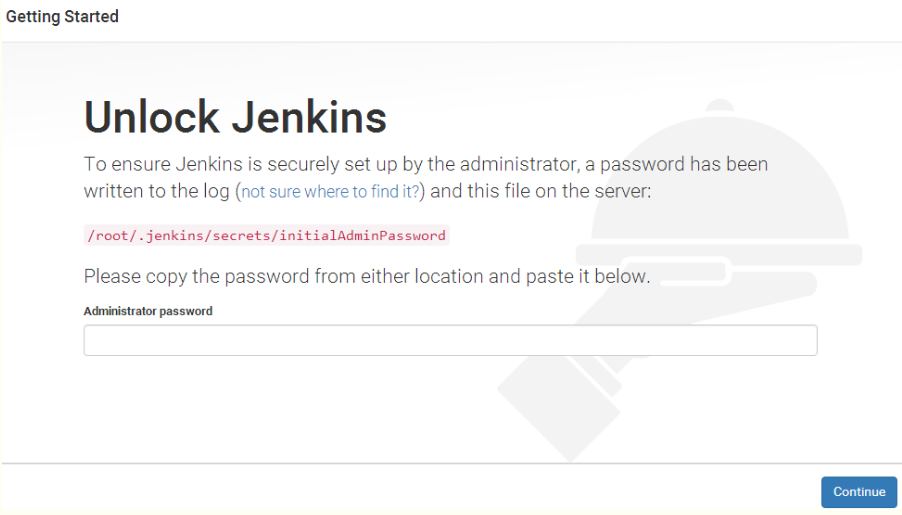
通过cat该路径的文件获取初始密码，填入文本框中，稍等一分钟之后会进入以下页面
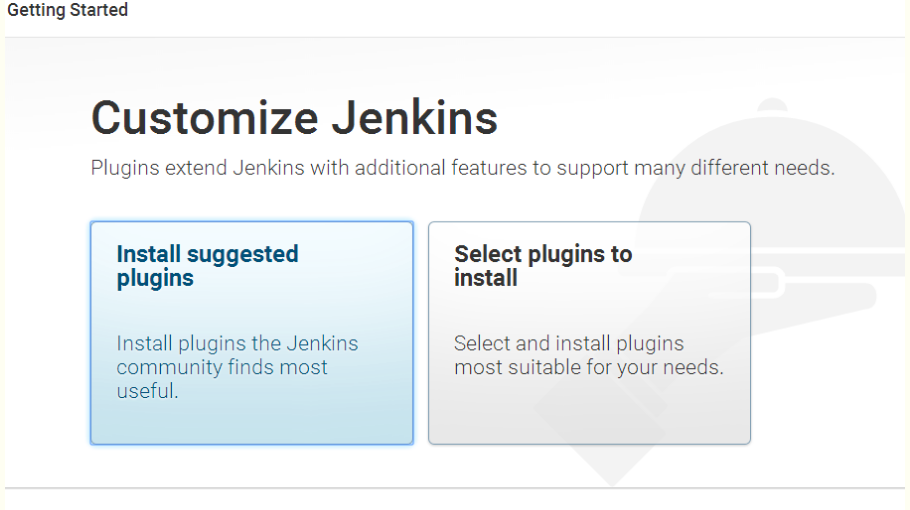
点击第一幅图安装插件。
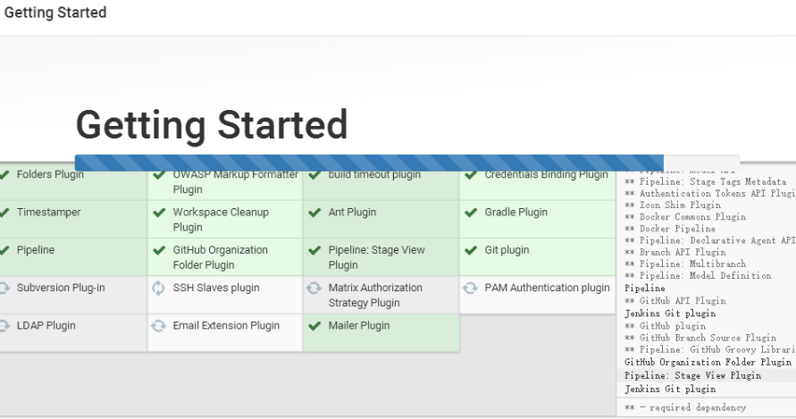
等待十分钟左右插件安装完成，插件安装完成之后出现如下图
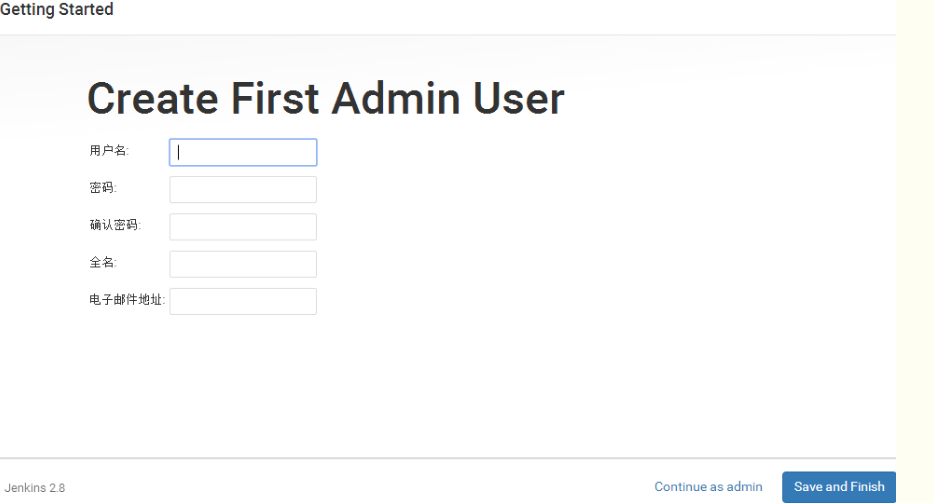
创建jenkins的第一个用户，然后点击 save and finish
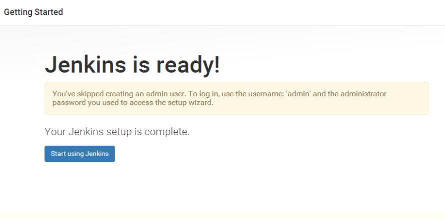
点击开始使用jenkins
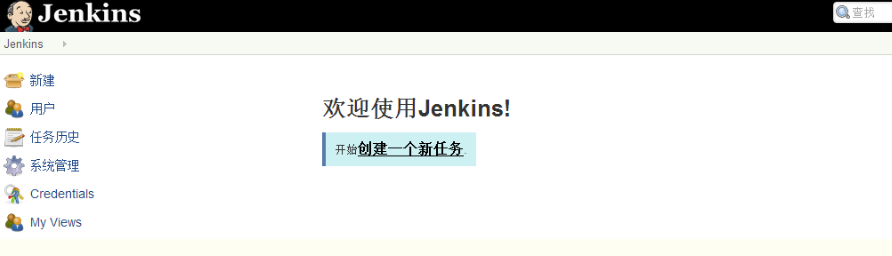
这就是jenkins的主界面，接下来开始jenkins之旅
1.首先我们需要配置jenkins的全局配置，包括(jdk、maven等)
点击系统管理—–global tool configuration
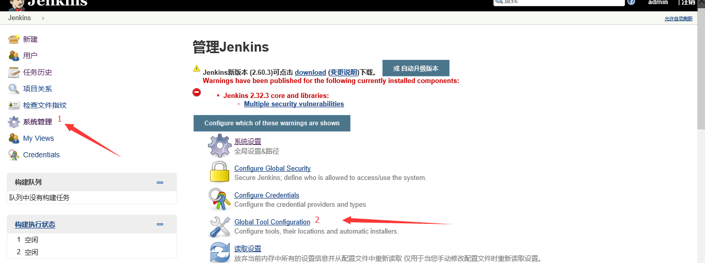
进去之后如下图配jdk
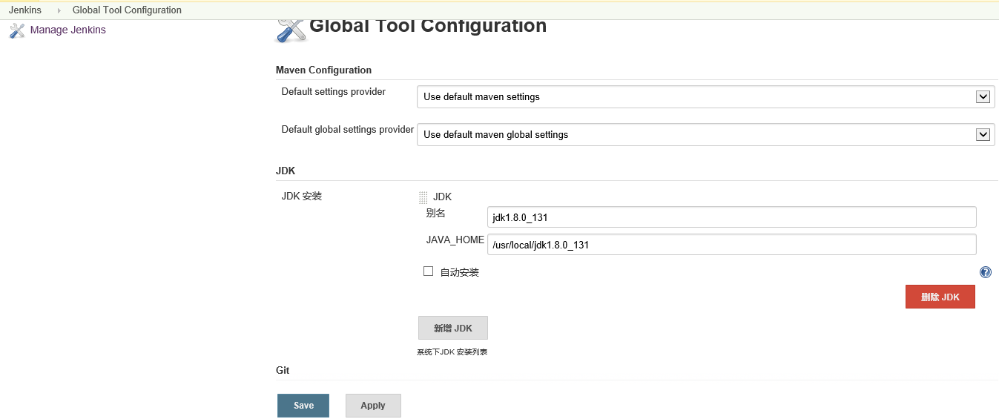
配git
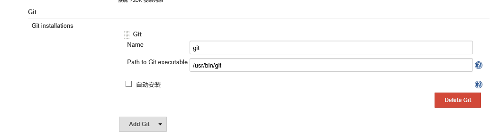
配maven
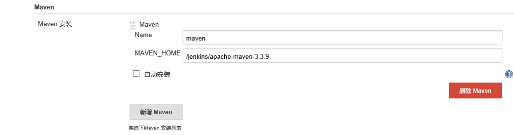
以上这些配置全都在global tool configuration里边，配置完点击保存
2.接下来配置ssh连接信息，首先先安装ssh插件：publish over ssh
点击系统管理—-管理插件
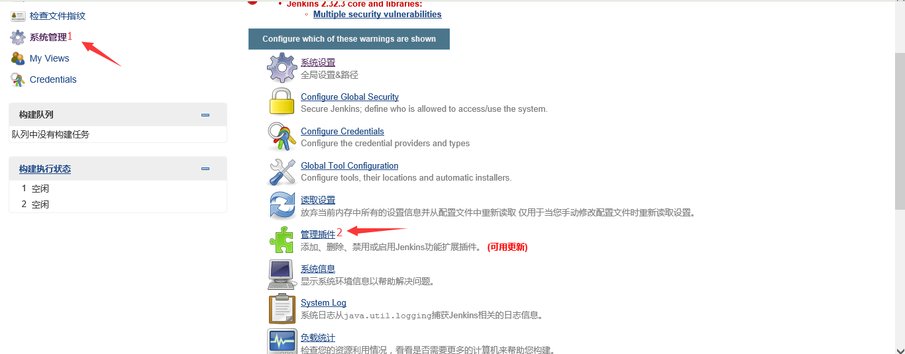
点击进来之后如下图，点击可选插件，然后在过滤文本框处输入publish over ssh ，把前面的复选框选中之后点击直接安装
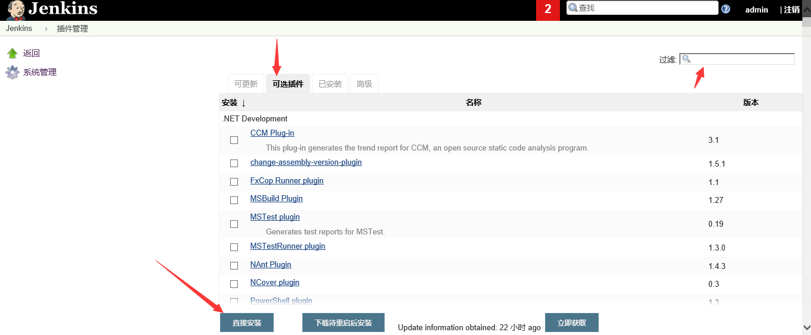
安装完成后如下图，勾选安装完后重启jenkins，这个插件就会生效
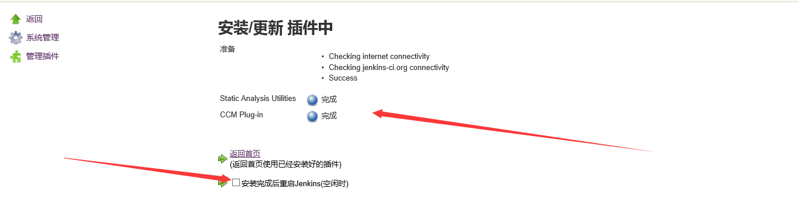
在jenkins服务器上执行ssh-keygen -t rsa，一路回车就可以 一路回车的话密码为空，这样就在/root/.ssh/下生成的两个文件id.rsa(私钥)和id.rsa.pub(公钥)，我们需要把公钥的内容写到测试服务器（tomcat服务器上）的/root/.ssh/authorized_keys文件中 如果没有就新建一个，接下来我们开始配置
点击系统管理—系统设置
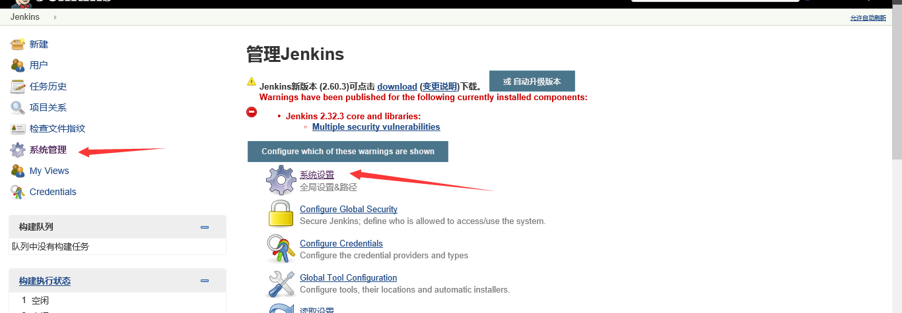
进去之后找到Publish over SSH项，如下图
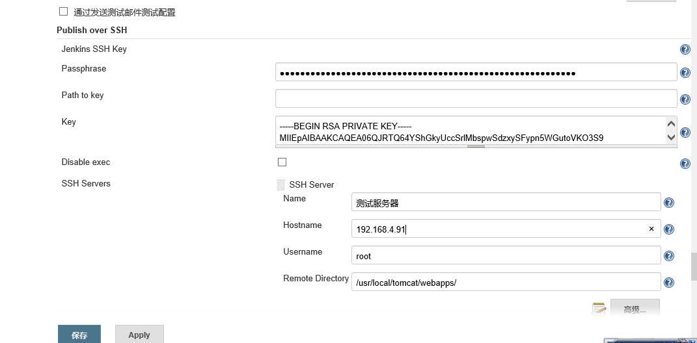
点第一张图左下角的高级可以修改端口，点击test configuration可以测试连接 ，如下图就是测试成功，说明我们现在已经可以使用jenkins连接服务器了
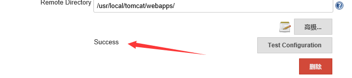
现在jenkins已经可以和远程服务器通信了
接下来我们新建一个job
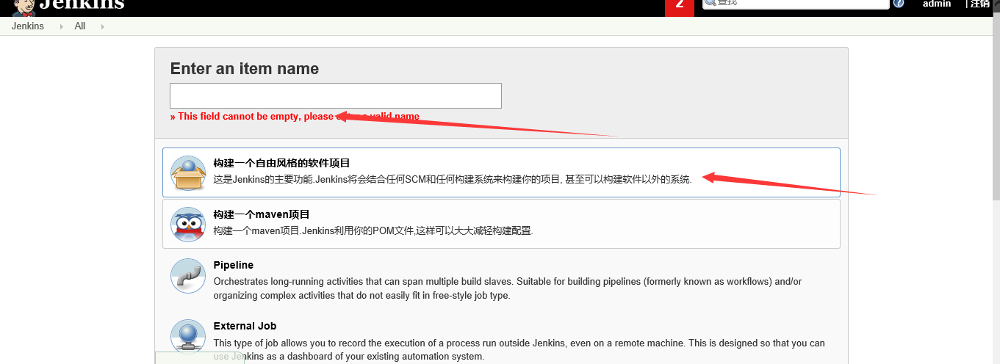
点击完之后如下图，描述这块记得写上，最开始这块没写，在构建项目的时候会有报错，报不能配置name[ ]，这里写上就好了
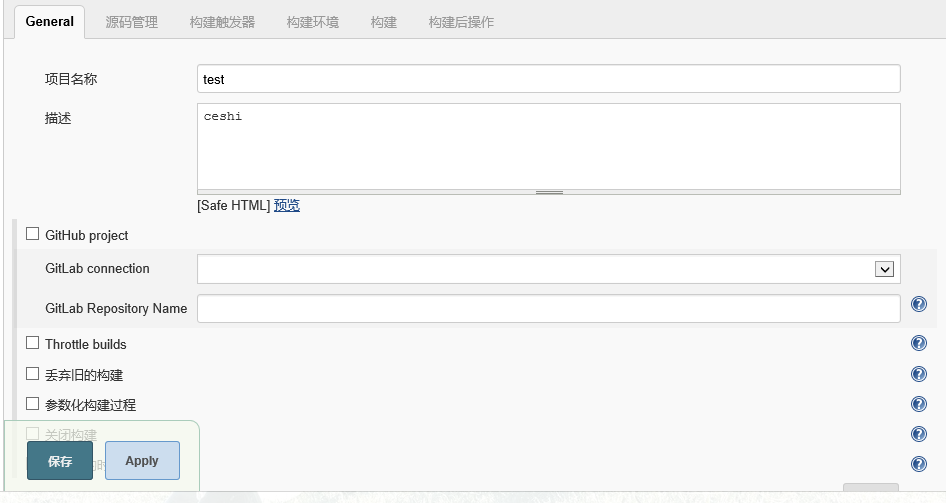
然后点击源码管理如下图，我们选择git，repository url 写gitlab仓库的地址，credentials是指信任，我们需要在gitlab中添加jenkins的公钥 ，在下图的key中填写jenkins服务器的公钥，title处填写jenkins，然后在到jenkins上就可以看到credentials处可以选择jenkins了，然后点击构建触发器选项卡
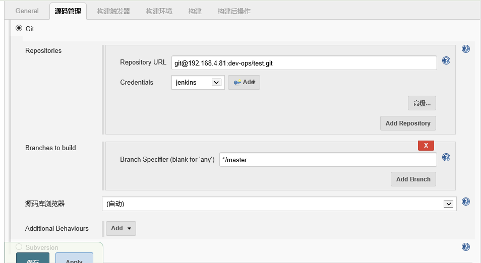
点击构建选项卡之后如下图：maven version处选择我们在global tool configuration处配置的maven名称 goals处填写maven命令，因为我们要打包，所以填写clean package
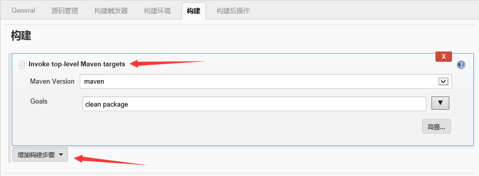
点击构建后选项卡之后如下图
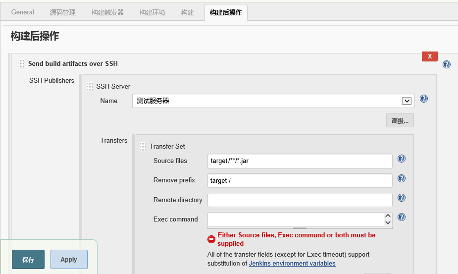
到此，jenkins自动打包，上传就配置完成了，接下来我们验证一下
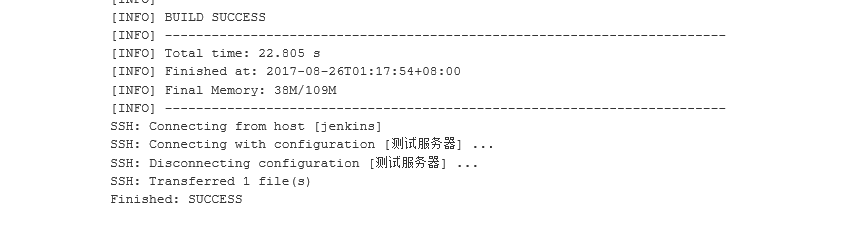
到测试服务器的webapps下验证，jar包已经传到tomcat下了